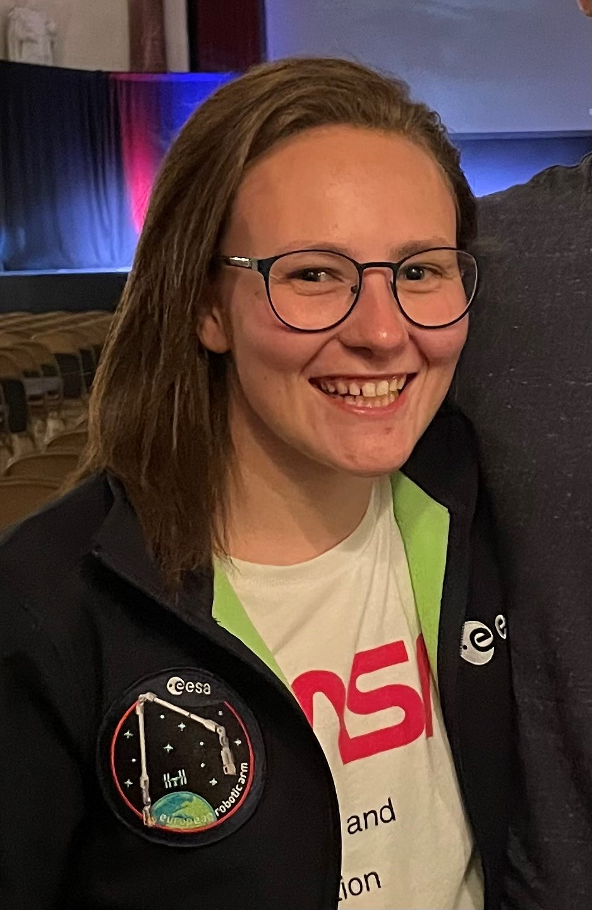

About Me
I'm currently on a 15 week course with Nology gaining skills to become a Web Developer. I have always been facinated about how things work and the process behind a finished website. I am a determined and keen learner who can work great individually or within a team. So far I'm really enjoying the course with Nology and it is inspiring to see everyones progress. I'm currently on a 15 week course with Nology gaining skills to become a Web Developer. I have always been facinated about how things work and the process behind a finished website. I am a determined and keen learner who can work great individually or within a team. So far I'm really enjoying the course with Nology and it is inspiring to see everyones progress.
Technical Skills
Insert Tech Skills Here